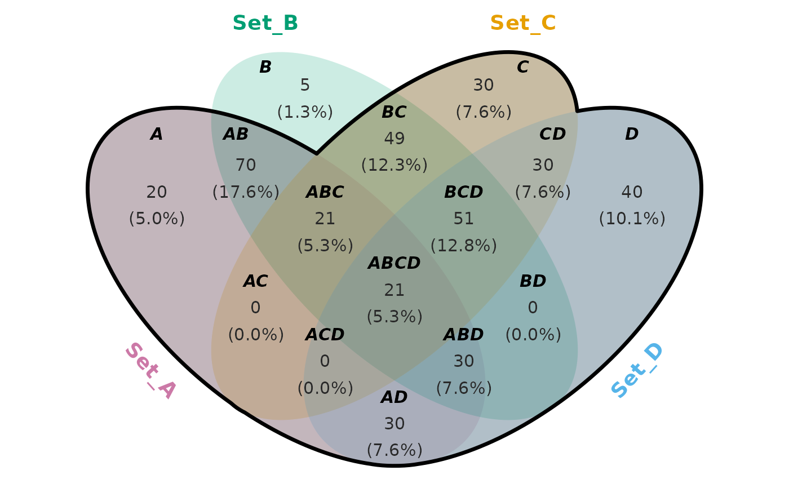
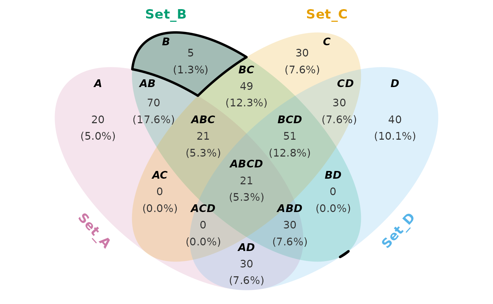
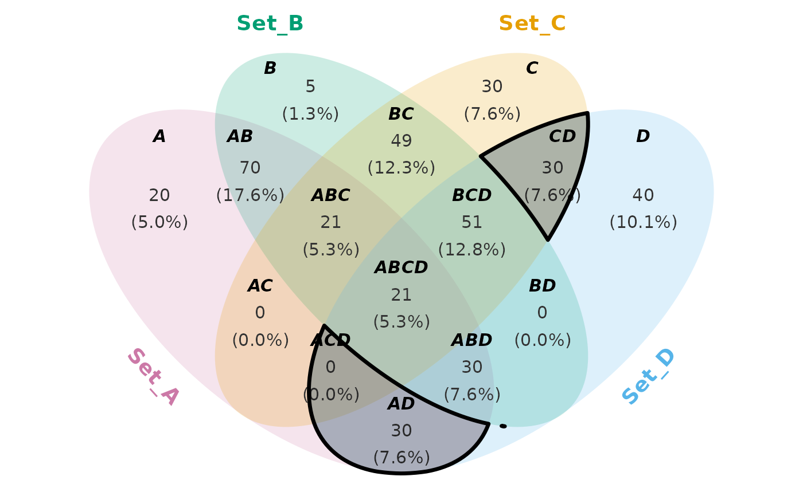

Perform intersection (intersect()), union (union()), and difference (setdiff())
for multiple venny_ep objects representing sets. They are handy wrappers of
the polyclip::polyclip() function.
Usage
intersect(x, y, ...)
union(x, y, ...)
setdiff(x, y, ...)
# S3 method for class 'venny_setops'
intersect(x, y, ...)
# S3 method for class 'venny_setops'
union(x, y, ...)
# S3 method for class 'venny_setops'
setdiff(x, y, ...)Arguments
- x
A two-column matrix consists of the point coordinates (x, y) used to construct the ellipse. This is the reference-ellipse used to be clipped by the others.
- y
A two-column matrix consists of the point coordinates (x, y) used to construct the ellipse. This is the object-ellipse used to clip the reference ellipse, i.e.
x.- ...
The other object-ellipses.
Value
A list contains one or multiple two-column dataframe. Each dataframe is the point coordinates (x, y) used to construct a polygon.
Details
These functions override the base versions to make them generic so that venny
can provide methods to proceed the venny_ep class object. The default methods
call the base versions.
Examples
data <- list(
Set_A = c(10:100, 500:600),
Set_B = c(5:150, 550:650),
Set_C = c(80:180, 580:680),
Set_D = c(120:220, 520:620)
)
out <- venny(data, detail = TRUE)
p0 <- out$venn
ep <- out$ellipse_path
#------------- Intersection -------------#
res <- intersect(ep$Set_A, ep$Set_B, ep$Set_D)
highlight(p0, res)
 #----------------- Union ----------------#
res <- union(ep$Set_A, ep$Set_C, ep$Set_D)
highlight(p0, res)
#----------------- Union ----------------#
res <- union(ep$Set_A, ep$Set_C, ep$Set_D)
highlight(p0, res)

#--------------- Difference -------------#
res <- setdiff(ep$Set_B, ep$Set_D, ep$Set_A, ep$Set_C)
highlight(p0, res)

#---------- Multiple operations ---------#
res <- union(ep$Set_A, ep$Set_B, ep$Set_C) |>
intersect(ep$Set_D) |>
setdiff(ep$Set_B)
highlight(p0, res)
